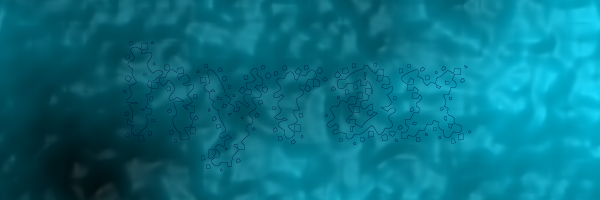

you've been hacked again
from the looks of it, you've been hacked MANY times, using a stoopid exploit. How does it work? Well first of all, you need a really stupid admin, then you need some shitty software. Let's go with some crap from microshit called frontpage (coincidentally i am using it right now ;)) Now put those 2 together, and BOOM instant security problem.
well, hyrax the re-hacker (i hax0red this crap back in october) is out
shoutz to DHC and zanith
admin (bleh) - get something more secure than frontpage.